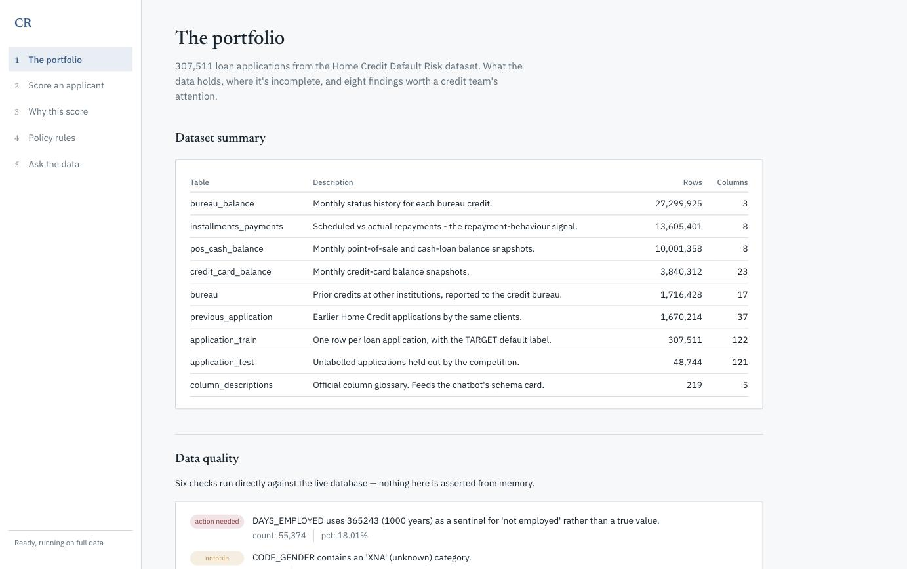
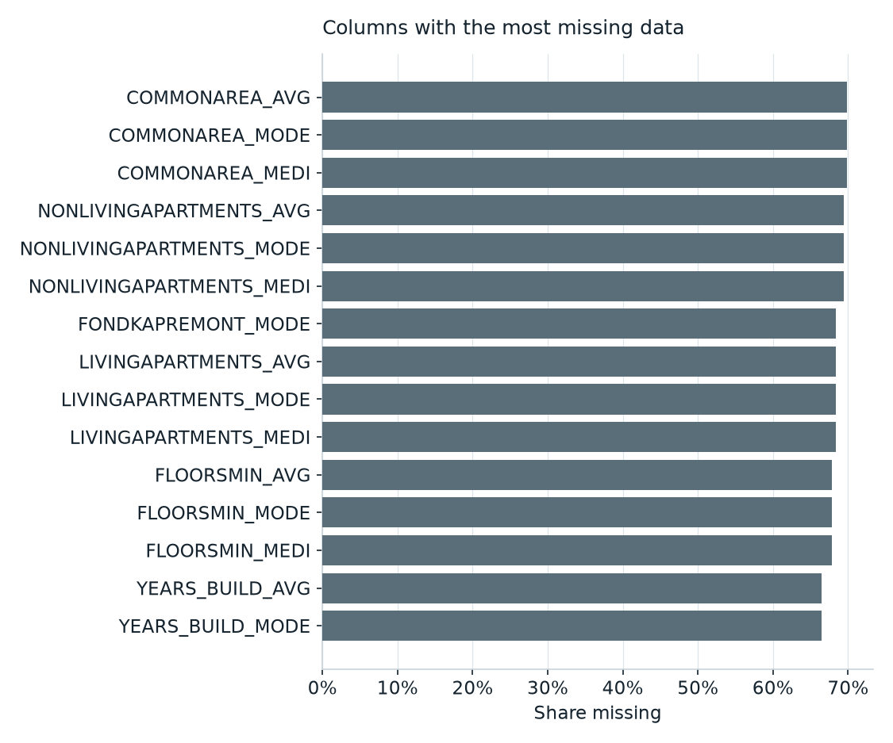
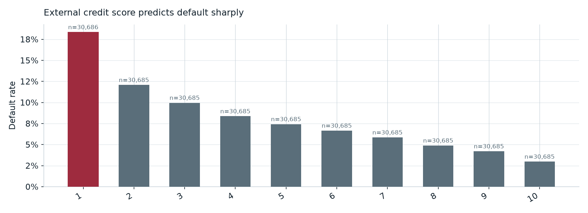
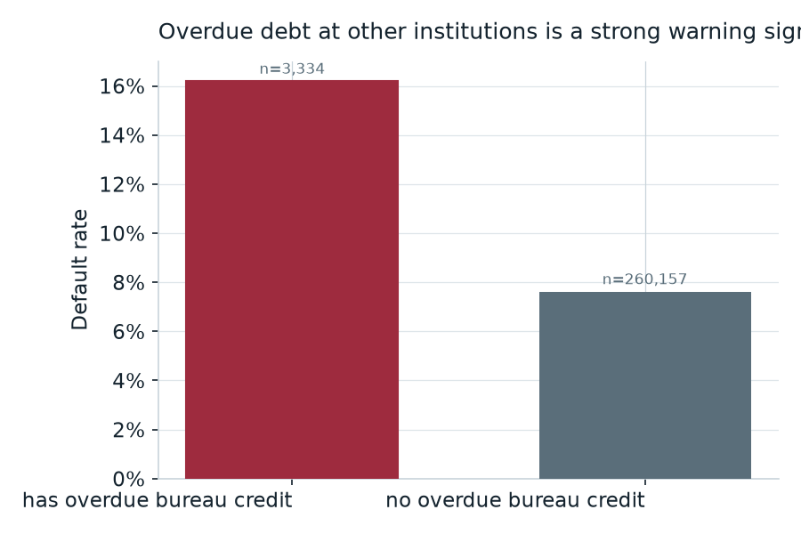
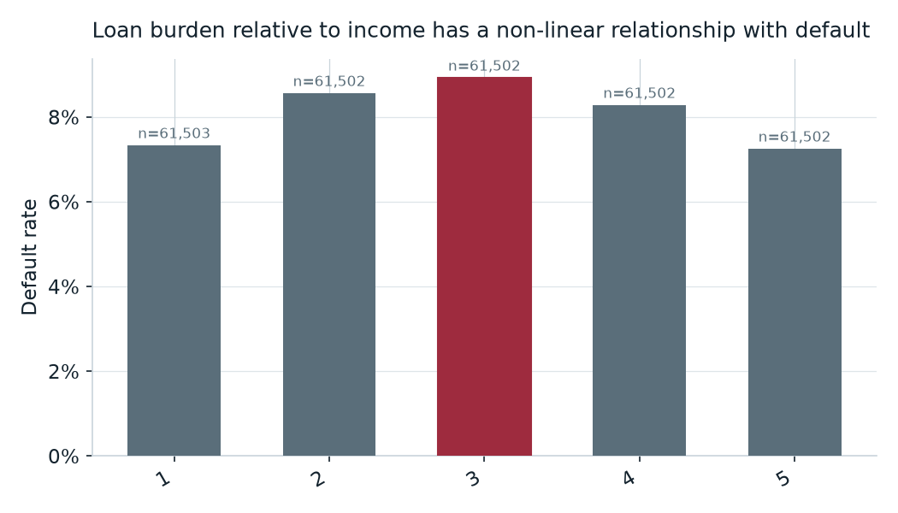
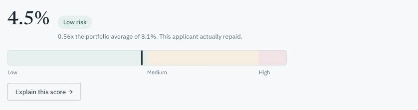
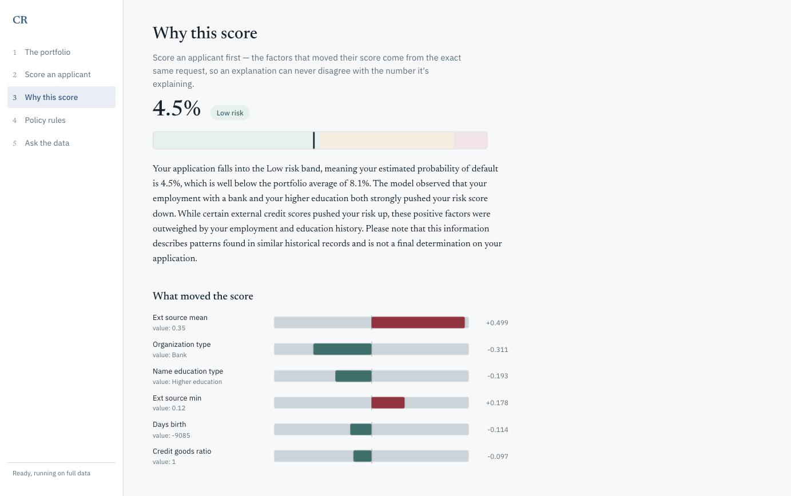
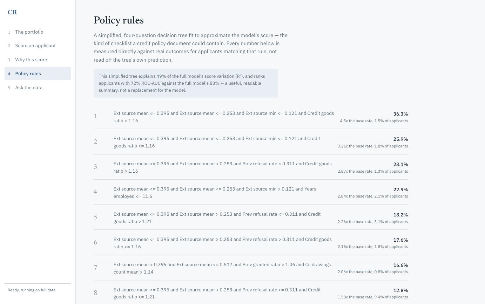
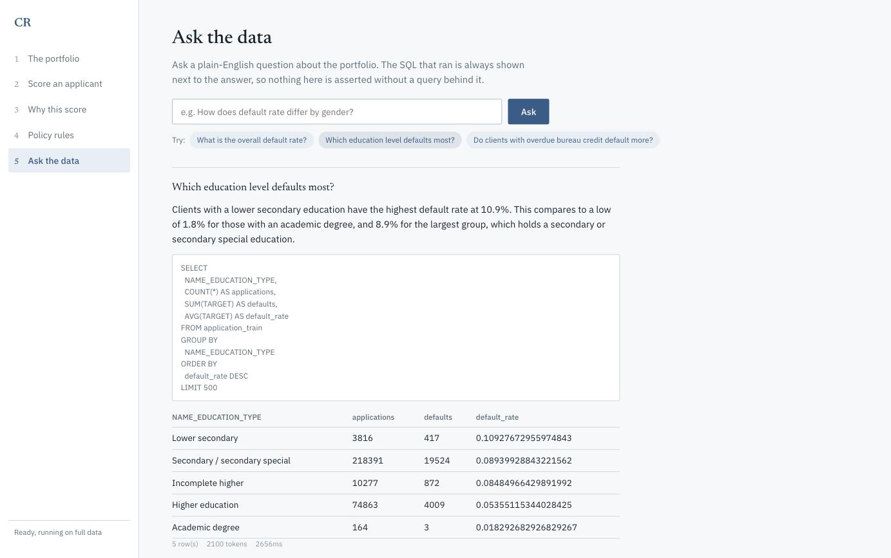

Machine Learning & Applied AI — Project Presentation
An end-to-end credit decisioning system on the Home Credit Default Risk dataset: it scores an applicant's probability of default, explains the score in plain English, states the policy rules behind it, and answers questions about the portfolio in natural language.
The problem
In this dataset 8.073% of applicants default — roughly 1 in 12. Approving those loans costs written-off principal; refusing good applicants costs revenue. An underwriting desk therefore has six needs that a bare accuracy score does not meet.
Identify high-risk applicants early
Rank the book by risk before a human reads a file, so limited review capacity lands where losses actually are.
Automate the risk score itself
A calibrated probability per application, produced in one request, not a spreadsheet exercise per file.
Give a reason, not just a number
A declined applicant must be told which factors drove the decision, in language a non-analyst can act on.
Stand up to audit and regulation
Every figure traceable to a query or an artifact; the model's own limitations recorded rather than omitted.
Let non-technical staff query the data
A credit officer with a question about the portfolio should not need to file a ticket with an analyst.
Bridge the model into credit policy
A gradient-boosted ensemble cannot be written into a policy manual. A short list of measured rules can.
Scope
Data pipeline
Kaggle download → DuckDB ingest of all 8 tables, with row counts verified against Kaggle's published figures on every build. 78.4s, 2.37 GB database.
Exploratory analysis
Six data-quality checks and eight business insights, each backed by its own SQL query and rendered chart — no hand-typed numbers.
Risk model
LightGBM over 205 features (122 raw + 83 engineered in SQL), isotonic-calibrated, with a four-way imbalance comparison behind the configuration.
Explainability
SHAP TreeExplainer per applicant, turned into a 2–4 sentence narrative grounded strictly on the computed contributions.
Business rules
A depth-4 surrogate tree distils the model into 16 IF-THEN rules, each with its measured population share and observed default rate.
Talk-to-data chatbot
Natural-language question → generated SQL → AST validation → read-only execution → an answer written only from the returned rows.

Architecture
The data
| Table | Rows | Cols | What it holds |
|---|---|---|---|
| application_train | 307,511 | 122 | Applications with the TARGET label |
| application_test | 48,744 | 121 | Unlabelled held-out applications |
| bureau | 1,716,428 | 17 | Prior credits at other institutions |
| bureau_balance | 27,299,925 | 3 | Monthly status on those credits |
| previous_application | 1,670,214 | 37 | Earlier applications to this lender |
| installments_payments | 13,605,401 | 8 | Scheduled vs. actual repayments |
| credit_card_balance | 3,840,312 | 23 | Monthly credit-card balances |
| pos_cash_balance | 10,001,358 | 8 | Monthly POS / cash balances |
58,489,893 data rows plus a 219-row Kaggle column glossary = 58,490,112. Every count matches Kaggle's published figures, re-verified on each build. Only application_train carries a label; the other seven contribute per-client aggregates as engineered features.
Data quality

Business insight 1 of 3

So what: EXT_SOURCE_2 and its siblings should anchor both the model and any manual review process. Few raw application fields separate risk this cleanly on their own — and the SHAP ranking on slide 12 confirms the model reached the same conclusion independently.
Business insight 2 of 3

So what: bureau data surfaces problems that are invisible to the application form alone — obligations already in trouble at another lender. This is the clearest argument in the analysis for joining the child tables at all rather than modelling the application form on its own.
Business insight 3 of 3

So what: the most heavily indebted applicants are not the riskiest ones. A naive "flag high credit-to-income ratio" policy rule would miss the actual riskiest segment entirely.
Machine learning
Why LightGBM. At ~307k rows and 205 mixed numeric/categorical features, gradient-boosted trees are the established strong baseline for tabular data at this scale — no GPU, minutes to train. LightGBM specifically for native NaN handling (the missingness here is informative, not random) and native categorical support, which avoids a 58-level one-hot expansion of ORGANIZATION_TYPE.
| Model (identical feature set) | Mean PR-AUC, 5-fold CV |
|---|---|
| Logistic Regression (transparent baseline) | 0.2518 |
| LightGBM (shipped) | 0.2790 |
+10.8% relative over the linear reference — the honest answer to "how much does model choice buy," isolated from the feature-engineering contribution.
Four imbalance strategies, same CV splits, selected on PR-AUC:
| Strategy | PR-AUC | ROC-AUC | Brier |
|---|---|---|---|
| None (shipped) | 0.2790 | 0.7859 | 0.0660 |
| Random undersampling | 0.2725 | 0.7818 | 0.1884 |
| SMOTE | 0.2492 | 0.7688 | 0.0675 |
| scale_pos_weight (≈11.4) | 0.2000 | 0.7330 | 0.0733 |
The shipped model therefore uses no explicit imbalance handling. That is a measured result, not an assumption — and it runs against the common expectation that imbalance always needs correcting.
Results — holdout, n = 61,503, untouched by training or calibration
Risk bands, cut from the calibrated holdout score distribution — not from arbitrary probability thresholds, since a "0.3 cutoff" means nothing on its own at an 8% base rate.
| Band | Population | Score ≥ | Observed default | Lift |
|---|---|---|---|---|
| High | 10% | 0.1878 | 29.9% | 3.7x |
| Medium | 40% | 0.0449 | 9.7% | 1.2x |
| Low | 50% | — | 2.4% | 0.3x |
Lift by decile — the table a credit officer reads.
| Decile (riskiest first) | Default rate | Lift | Cum. defaulters caught |
|---|---|---|---|
| 1 | 29.9% | 3.70x | 37.0% |
| 2 | 16.6% | 2.06x | 57.6% |
| 3 | 10.3% | 1.28x | 70.4% |
| 4 | 7.1% | 0.88x | 79.3% |
| 5 | 4.7% | 0.58x | 85.1% |
Operating threshold 0.0935, set by minimising expected cost under a stated 10:1 false-negative-to-false-positive cost assumption — not by a 0.5 cutoff or by F1, neither of which is meaningful for a lender. Precision 20.0%, recall 67.3% at that threshold.
Explainability


SHAP's TreeExplainer runs directly on the LightGBM booster. The factors and the score come from the same request, so an explanation can never disagree with the number it explains.
One distinction, stated because it is easy to get backwards: SHAP explains the model's raw log-odds output, not the calibrated probability shown to the user — calibration is a monotone remap fitted afterwards, with no per-feature decomposition. Contributions are therefore always presented directionally ("pushed the risk up / down"), never as an exact slice of the displayed percentage.
Top global features by mean |SHAP|:
| 1 EXT_SOURCE_MEAN | 0.404 |
| 2 CODE_GENDER | 0.104 |
| 3 ORGANIZATION_TYPE | 0.099 |
| 4 CREDIT_GOODS_RATIO | 0.093 |
Business rules
A depth-4 decision tree is fitted to approximate the calibrated score (not the label), then each leaf is reported as an IF-THEN rule. 16 rules were extracted, from 36.3% down to 2.6% observed default rate. Every rate below is measured directly against TARGET for the applicants actually in that leaf — not read off the tree's own prediction.
IF ext-source mean ≤ 0.253 AND ext-source min ≤ 0.121 AND credit-to-goods ratio > 1.16
→ 1.5% of applicants (4,554) · observed default rate 36.3% · 4.5x base rate
IF ext-source mean ≤ 0.395 AND > 0.253 AND previous-refusal rate > 0.311 AND credit-to-goods ratio > 1.16
→ 1.3% of applicants (4,046) · observed default rate 23.1% · 2.87x base rate
IF ext-source mean ≤ 0.253 AND ext-source min > 0.121 AND years employed ≤ 11.6
→ 2.1% of applicants (6,400) · observed default rate 22.9% · 2.84x base rate

Talk-to-data

The pipeline
Deployment
To run the whole platform:
Both services share one image. Only etl declares a build — giving both a build block made Compose's parallel builder race to tag the same image, which was confirmed as a real failure and is documented in the compose file itself.
| Capability | Before ETL completes |
|---|---|
| Score a hand-entered applicant | works |
| Why this score (SHAP + narrative) | works |
| Policy rules | works |
| The portfolio (EDA) | works |
| Pick a real applicant by id | clear 503 |
| Ask the data | clear 503 |
Once etl finishes, the last two start working on the next request — no restart. The readiness signal is a completion marker written only after row-count verification succeeds, not the existence of the database file: DuckDB creates that file the moment a connection opens, long before the tables are loaded, and a request arriving mid-build was measured surfacing as a raw 500.
Honest assessment
Known limitations
What would come next
Test suite: 144 tests passing fully offline, plus 5 live API contract tests. 15 real defects were found and fixed by testing against real systems rather than synthetic fixtures.